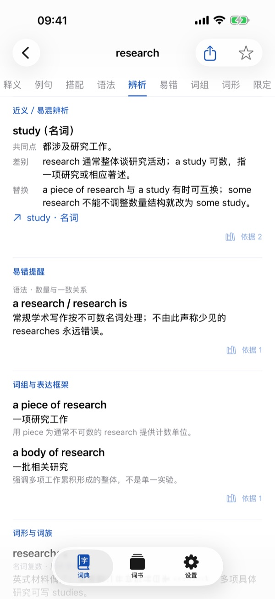
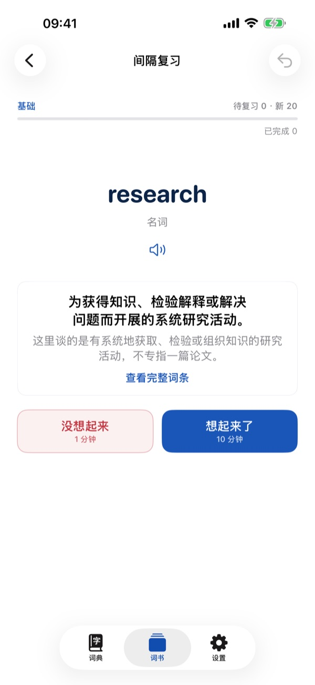

一个义项，一页讲透
释义、义项边界、对照普通义和相关义项按模块排好，点一下标签就能跳到对应部分。
iPhone 与 iPad 学术英语词典
2114 个学术义项，分基础、进阶、高阶三档。释义、义项边界、原创例句、常用搭配与易错辨析，一页看清。
为什么按义项
同一个英文单词在学术写作里常常只取其中一个意思。蓝宝书把每个学术义项单独成条：先说清它在学术语境里的意思，再讲它和普通用法、近义表达之间的边界。
释义、义项边界、对照普通义和相关义项按模块排好，点一下标签就能跳到对应部分。
每个义项配两句原创例句，附中文译文和用法说明，可以选美式或英式朗读。
说明什么时候可以替换、什么时候不能，并把常见错误直接指出来。
界面一览


复习是辅助
收藏的词和三档词书都可以用来复习。每天学多少新词由你决定，到期的复习不受数量限制。
释义、例句与讲解均为本项目原创。分档是编辑分档，不代表 CEFR 或任何考试的认证。所有义项目前都经过原作者自检，尚未经过外部审阅；如果发现问题，欢迎告诉我们。